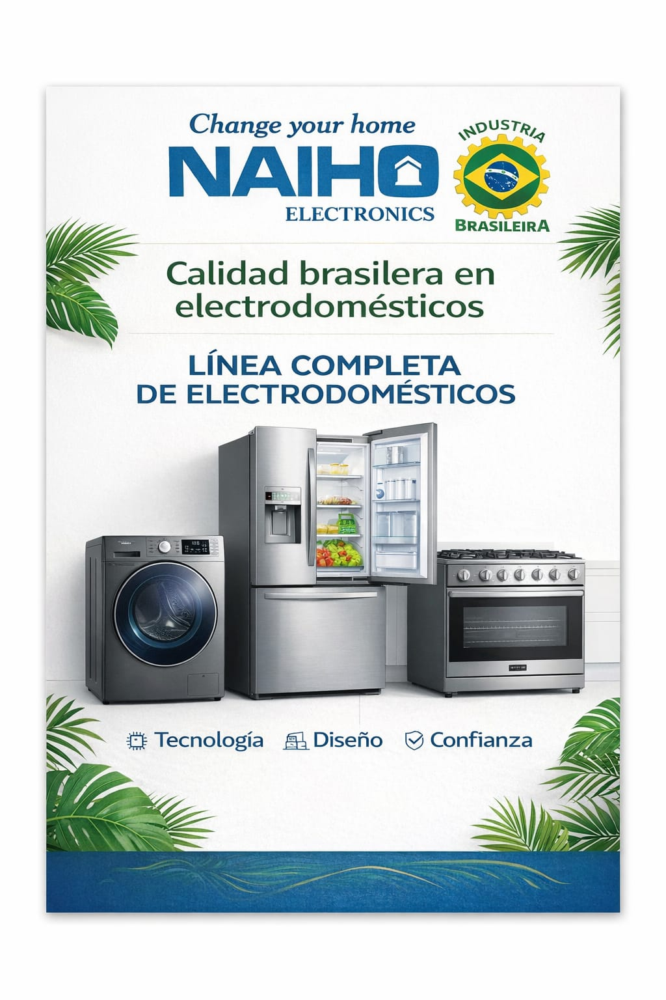
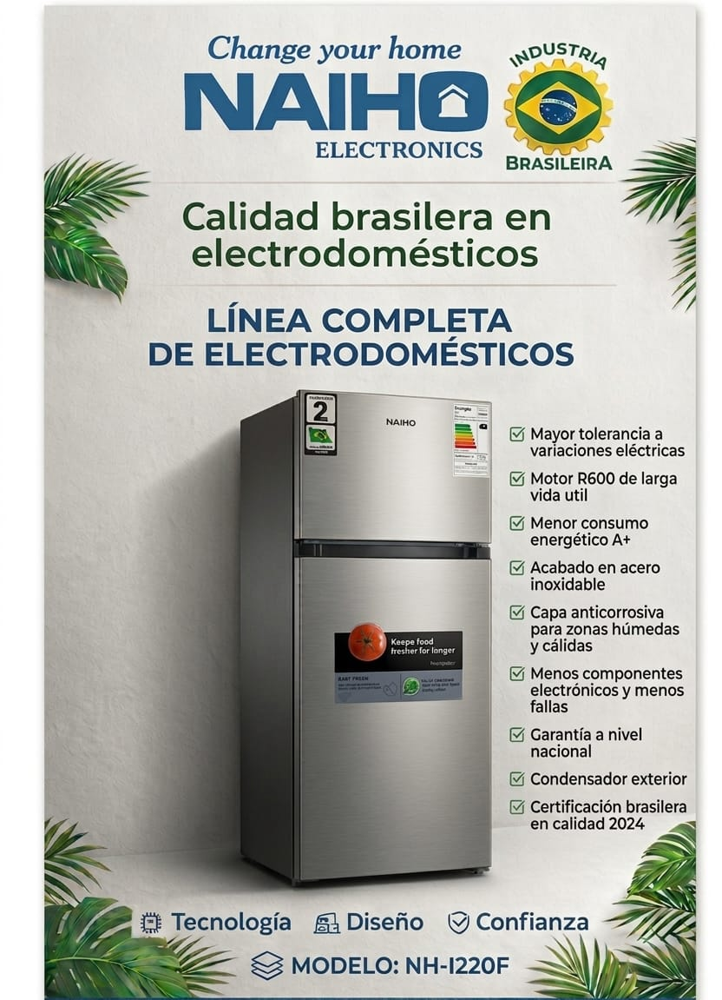

Soluciones pensadas para el uso diario.
Change your home
Calidad brasilera para tu hogar
Electrodomesticos NAIHO con presencia moderna, bajo consumo y respaldo tecnico nacional.

Industria
Brasilera
Acabados modernos para cocinas actuales.
Garantia y soporte a nivel nacional.
Linea completa
Electrodomesticos NAIHO
Una gama para refrigeracion, lavado y cocina con estetica de acero, funcionamiento eficiente y respaldo tecnico.

Modelo NH-I220F
Refrigerador de acero inoxidable
Ideal para hogares que necesitan rendimiento estable, menor consumo y buena resistencia en climas calidos o humedos.
Refrigeracion
Conserva tus alimentos con equipos robustos, practicos y de bajo consumo.
Lavado
Lavadoras con controles claros, gran presencia visual y uso sencillo.
Cocina
Cocinas y hornos con acabado metalico para completar el espacio.
Calidad brasilera
Hecho para durar
- Mayor tolerancia a variaciones electricas
- Motor R600 de larga vida util
- Menor consumo energetico A+
- Acabado en acero inoxidable
- Capa anticorrosiva para zonas humedas y calidas
- Menos componentes electronicos y menos fallas
- Garantia a nivel nacional
- Condensador exterior
Servicios tecnicos autorizados
Soporte en Bolivia
Encuentra atencion autorizada por ciudad, direccion y contacto.
| Ciudad | Direccion | Contactos |
|---|---|---|
| La Paz | Eloy Salmon - Galeria Lily, Calle Antonio Gallardo N 77 | Telf.: 2-2462234 Cel.: 72587956 |
| La Paz | Villa Dolores - Entre calle 5 y 6, Calle Francisco Carvajal N 37 | Telf.: 2-2462234 Cel.: 72585226 / 75839997 |
| Cochabamba | Calle Pedro Bedregal, Calle Jose Curtinas N 22 | Cel.: 65312173 / 79777909 |
| Oruro | Entre Potosi y 6 de Octubre, Calle Murguia N 443 | Telf.: 2-5289994 Cel.: 76130083 |
| Santa Cruz | 3er Anillo Externo entre Av. Alemana y Mutualista, Calle Combate N 3120 | Telf.: 3-3241862 Cel.: 75097319 |
| Sucre | Zona Mercado Campesino, Calle Marzana N 145 | Cel.: 70327944 / 78931820 |
| Tarija | Entre Calle Corrado y Luis Echazu, Calle Ballivian N 916 | Cel.: 6655455 / 67384111 |
| Potosi | Entre Calle Cerrudo y Calle Omiste, Calle Bustillo N 832 | Cel.: 71816023 |
| Trinidad | Plaza Principal - Club Social 18 de Noviembre Galeria, Calle Nicolas Suarez | Cel.: 78289059 / 72821655 |
| Cobija | Av. Pando esquina 27 de Mayo | Cel.: 74757870 |